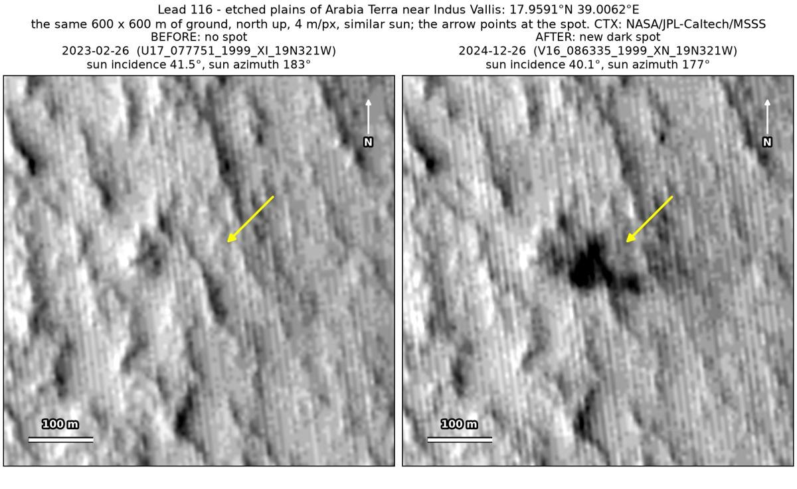
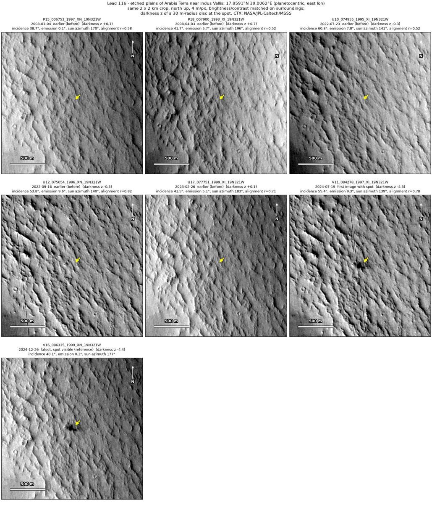
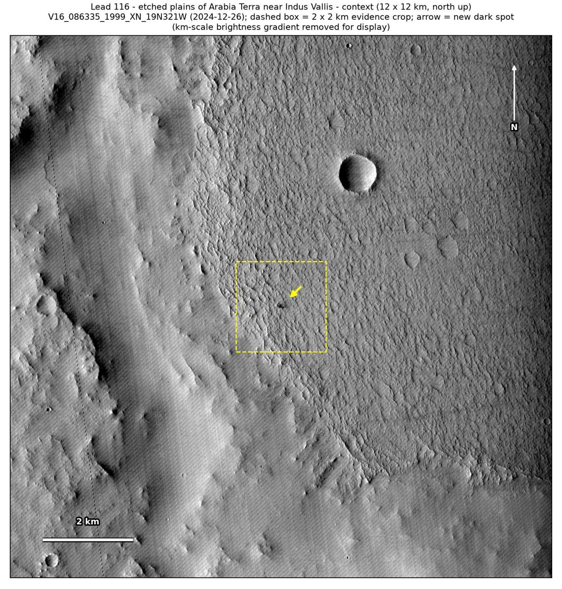

Professor of Mathematics
Paata Ivanisvili
Department of Mathematics, University of California, Irvine

← Possible new impact sites on Mars
Candidate 116: Etched plains of Arabia Terra near Indus Vallis
Strong · roughly 80%

What changed. A dark spot about 75 m across, with a darker core and ragged edges, appeared on etched plains of Arabia Terra near Indus Vallis between February 2023 and July 2024. Two CTX images from two orbits show it.
Why it may be a new impact. Five earlier images, from 2008 to 2023, show no spot there; the last, of February 2023, was taken under almost the same sun as the December 2024 image. A dark mark 300 m away shows in all five, so each would have shown the spot. A dark spot with a darker core that appeared within 17 months, with nothing else changing in the surrounding 5 × 5 km and no tracks, is how the blast zone of a small new crater looks.
- Location
- 17.959° N, 39.006° E
- Absent
- 4 January 2008, 3 April 2008, 23 July 2022, 16 September 2022 and 26 February 2023
- Present
- 19 July 2024 and 26 December 2024
- Size
- Dark spot about 75 m across (110 × 86 m in the December 2024 image), a dark core with ragged edges
- Confidence
- Strong candidate: roughly 80% likely to be a new impact.
- Caveat
- Only two images show it, and a thin defect line in the July 2024 image crosses its western edge, although the December 2024 image has none and shows the spot as dark. No image from the high-resolution HiRISE camera covers it; the nearest ends 30 km away. Like every candidate here, it is unconfirmed: see the caveat.

